Shri Anup Jalota ( 2018 - Present )
"Bhajan Samraat"
Anup Jalota is a popular bhajan singer of India. He is also known as the "Bhajan Samraat". In 2012, he was awarded with Padma Shri by government of India for his contributions to Indian music. Some of his popular bhajans include - Aisi Lagi Lagan, Main Nahi Makhan Khayo
Bhajan singer par excellence Anup Jalota also owns "Jalota Films" - a film production company
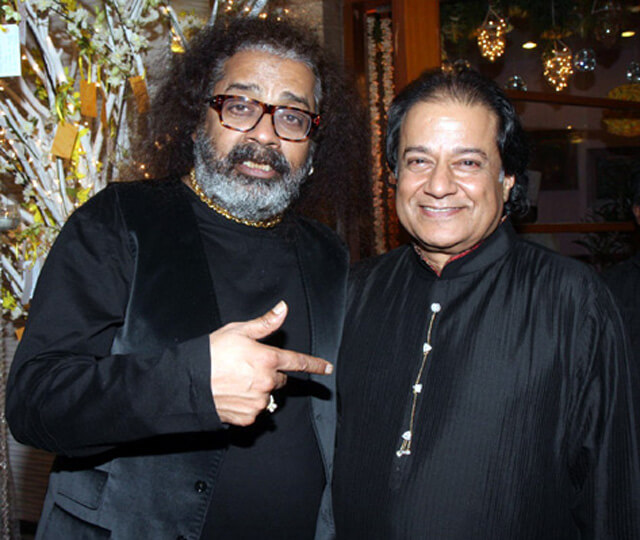
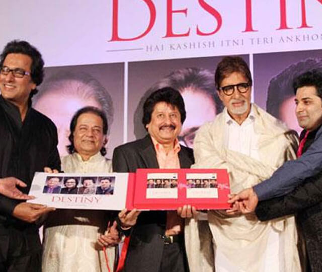
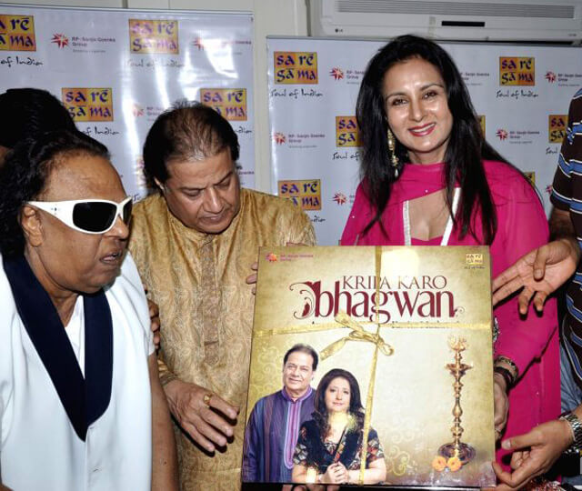
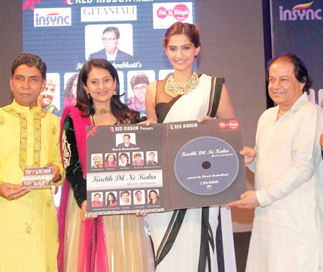
RJ Rahat Jafri ( 2018 - 2020 )
RJ
VP & Head Bollywood content corporate (Radio Mirchi) radio jockey since 1995 started with Times fm and now with Radio Mirchi Hindi Music and movie is her passion.
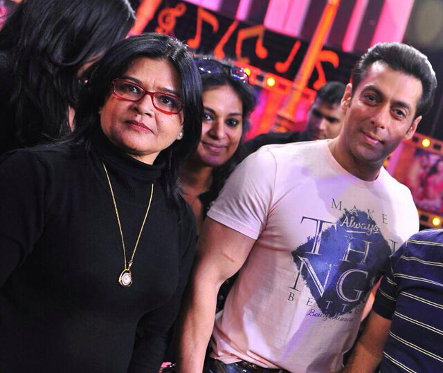
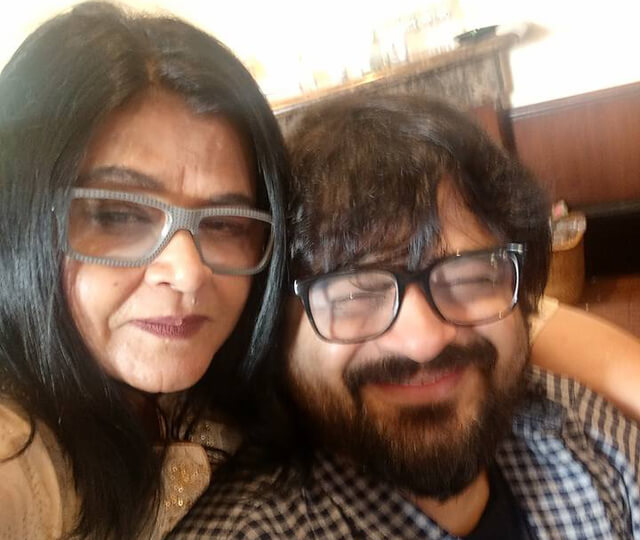
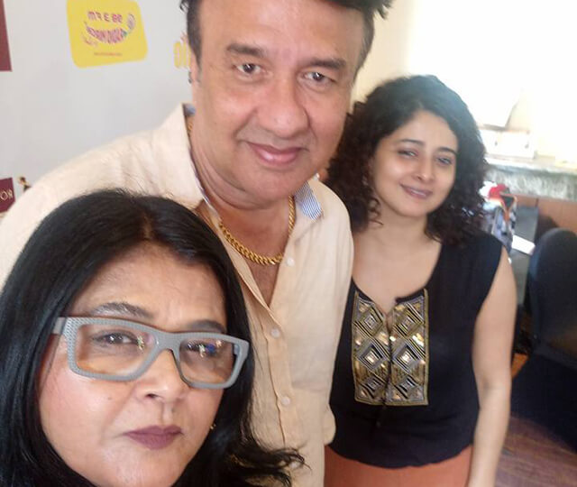
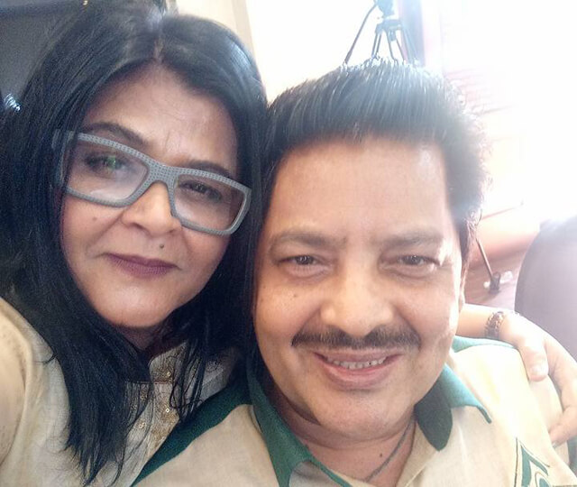
Pt. Suvashit Raj ( 2018 - Present )
Astrologer, TV Personality
Who's remarkable predictions has come true and because of this many Vip's & Bollywood Celebrities, Choreographer/Director, Industrialist and many Politicians follow his guidelines.
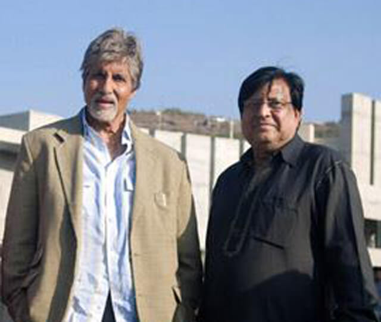
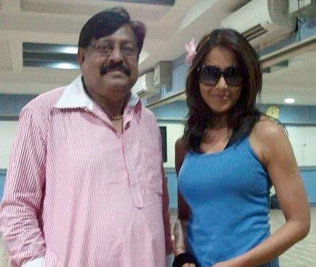
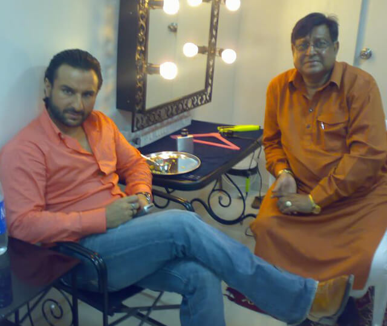
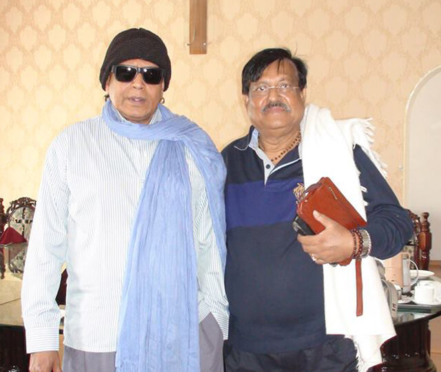
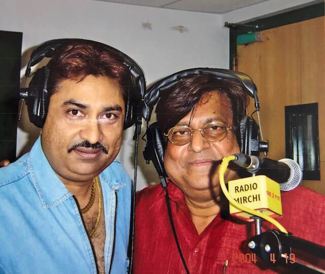

Dilraj Kaur ( 2023 - 2024 )
Dilraj Kaur started to play the tabla and taking musical training at the age of seven. Her first movie was in the 1975 film Jaan Hazir Hai. In 1980, she released the song "Gaddi Jaandi e" along with singers Mohammed Rafi, Shailendra Singh and Hemlata composed by Usha Khanna which became a hit. Her most famous song was "Mausam Mastana", a duet with Asha Bhosle, from the 1982 film Satte Pe Satta starring Amitabh Bachchan. This song has been recreated by Indian Idol Junior contestant Ananya Sritam Nanda in 2016. She went on to sing "Mausam Mastana" for the 1982 film Satte Pe Satta. She has sung under the baton of all top music directors including R. D. Burman, Laxmikant–Pyarelal, Kalyanji–Anandji, Bappi Lahiri, Usha Khanna, and Ravindra Jain.
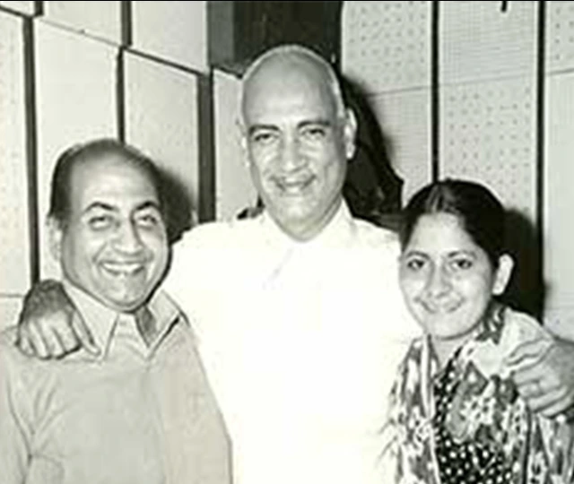

Shri Arun Govil ( 2021 - 2022 )
Arun Govil born 12 January 1958 Meertu, Uttar Pradesh, is an Indian actor who works in HINDI films and television. He is best known for portraying the role of Lord Rama in Ramanand Sagar’s epic Television Series Ramayan and King Vikramaditya in Vikram Aur Betaal. He also appeared in films like Paheli (1977), Sawan Ko Aane Do (1979), Saanch Ka Aanch Nahin (1979), Jiyo To Aise Jiyo (1981), Himmatwala(1983) and Dilwaala (1986).
He got his formal education at Chaudhary Charan Singh University, Meerut, Uttar Pradesh, where he studied engineering science and acted in some plays. He spent his teenage life in Shahjahanpur Uttar Pradesh. His father wanted him to become a government servant while Arun wanted to do something for which he would be remembered.
Arun's father, Shri Chandra Prakash Govil, was a government officer. Arun is the fourth of six brothers and two sisters. His elder brother Vijay Govil is married to Tabassum, a former child actress and the host of the first Bollywood Celebrity talk show on Doordarshan Phool Khile Hain Gulshan Gulshan, which continued for 21 years.
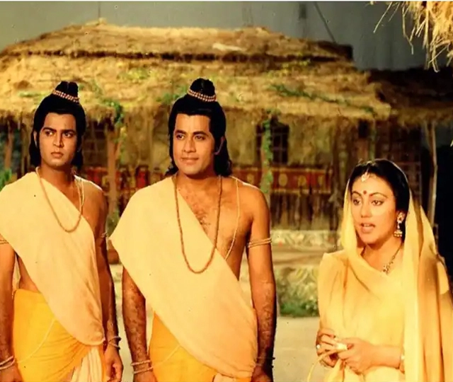
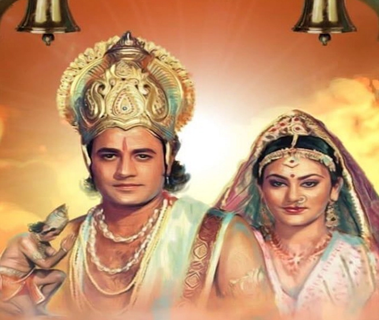
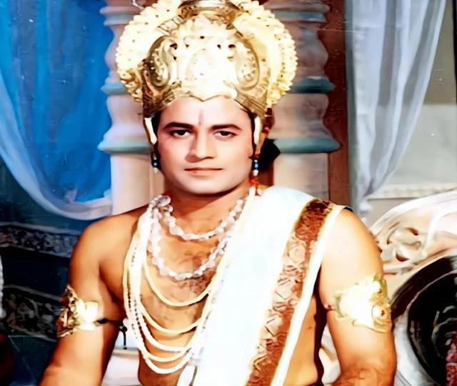
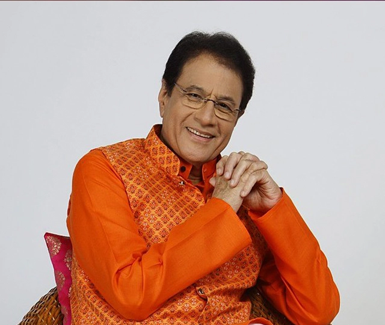
Dr. Jaspinder Narula ( 2019 - Present )
Jaspinder's career in singing began early. Her father Kesar Singh Narula was a music composer of the 1950s. Initially Jaspindar Narula kept away from film singing and specialised in singing bhajans and Sufiana compositions. She moved to Mumbai. She excels in singing folk and devotional songs. She has lent her voice to record numerous music albums for a large number of successful Bollywood films like Dulhe Raja, Virasat, Mission Kashmir, Mohabbatein and Bunty aur Babli to name a few.
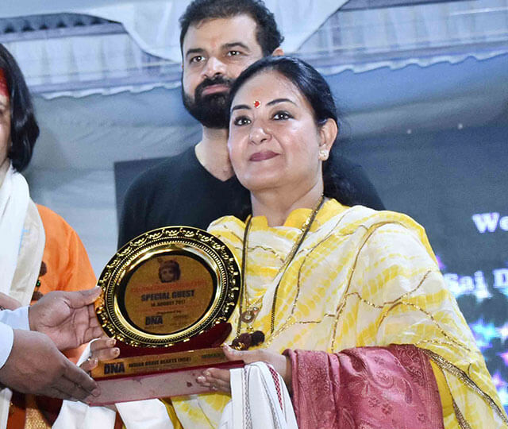
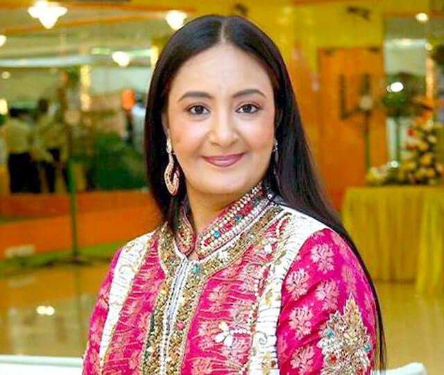
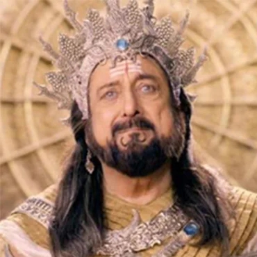
Shri Gufi Paintal ( 2022 - 2023 )
Sarabjeet "Gufi" Paintal (born 4 October 1944) is an Indian actor and director. His most famous role was that of Shakuni in the TV serial Mahabharat . He is the elder brother of the noted comedian and character actor Paintal. Gufi Paintal is an Indian actor who appeared in some notable Bollywood movies in 1980s, as well as television serials and plays. He was born in a Sikh Family. Initially trained as an engineer, he would go on to follow his younger brother (who had been trained at the Film and Television Institute of India into acting. Arriving in Bombay in 1969 and Gufi took up modelling, worked as an assistant director for movies and acted in various movies and serials. He has also directed his brother. His most well-known role is that of Mama (Maternal Uncle) Shakuni in the Mahabharat adaptation by B.R. Chopra and his son Ravi Chopra which Paintal himself recognises as his best role. Indeed, he is so associated with his Shakuni character in India that Paintal presented a political discussion show on the news channel Sahara Samay in the character of Shakuni.
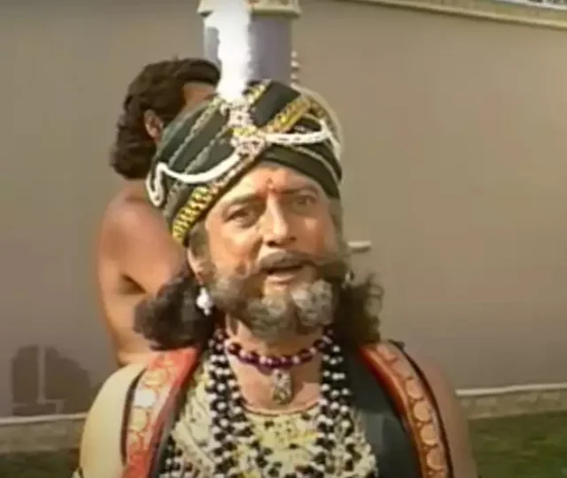
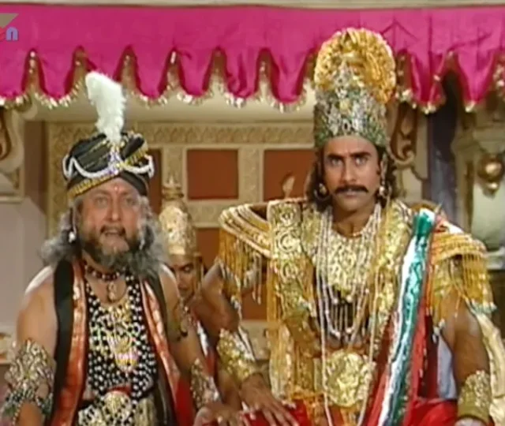